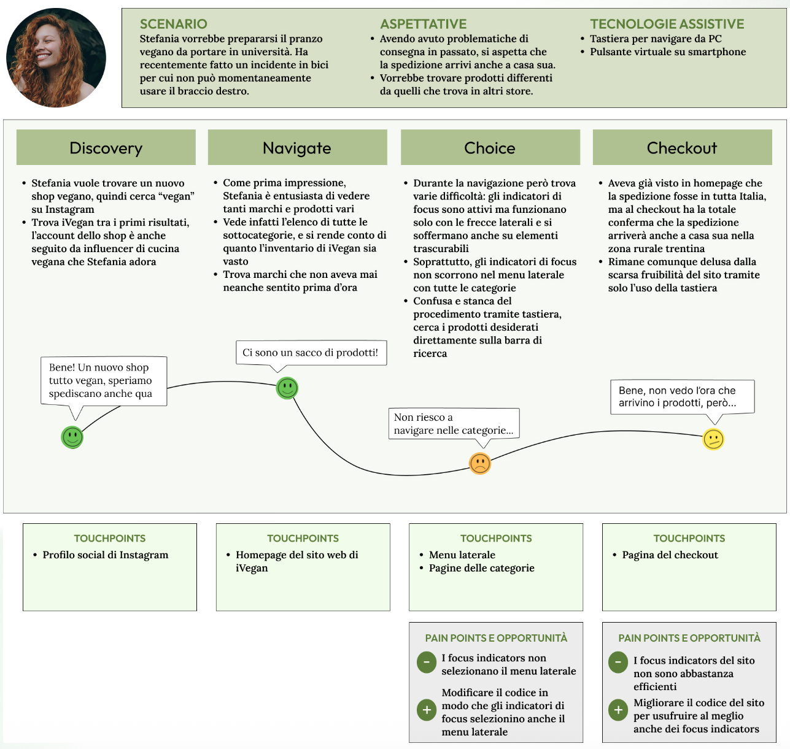

Grafica e rebranding
Redesign per un e-commerce plant based, dal logo alla tipografia, dalla palette colori ai post dei profili social.
Redesign per un e-commerce plant based, dal logo alla tipografia, dalla palette colori ai post dei profili social.

Progettazione di wireframe responsivi per iVegan, con attenzione a gerarchia visiva, layout e user flow funzionali.

Valutazione dell'accessibilità e dell'usabilità del sito iVegan, individuando le criticità e proponendo soluzioni.

Fase di ricerca e analisi della user experience col fine di migliorare l'esperienza utente del sito iVegan.